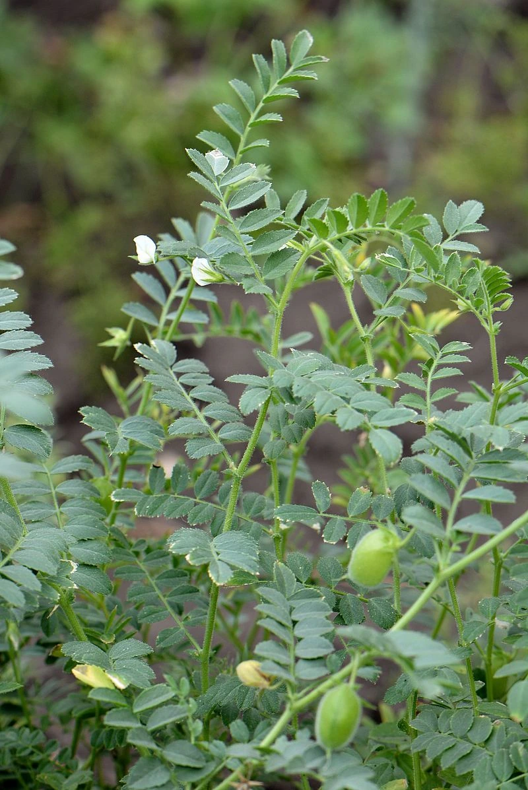

农作物与经济植物 · 植物界
鹰嘴豆 Cicer arietinum

鹰嘴豆的种子一端尖突形似鹰嘴，富含蛋白质，可煮食、磨粉和制豆泥，是南亚与地中海地区的重要豆类作物。
- 分类
- 门被子植物门纲双子叶植物纲目豆目科豆科属鹰嘴豆属
- 栖息环境
- 凉爽干燥的旱地，耐旱、喜光照充足
- 地理分布
- 原产西亚与地中海东部，现主产于印度、巴基斯坦、土耳其等地
- 保护级别
- 暂无评估（栽培作物）
物种志
鹰嘴豆是一年生草本，株高 0.3–0.8 m，茎直立，有分枝，全株有腺毛。叶片为奇数羽状复叶，小叶卵形，边缘有锯齿。花白色或淡蓝色，蝶形，单生于叶腋。荚果短、膨胀，内含 1–2 粒种子，种子球形、一端有明显的喙状突起，形似鹰嘴，颜色有米黄、褐色、黑色等。
鹰嘴豆原产西亚与地中海东部，栽培历史已有 7000 多年，是世界上最古老的栽培作物之一，如今在南亚、地中海、中东广泛种植，中国新疆等地也有栽培。它喜凉爽干燥、光照充足，耐旱性较强。种子富含蛋白质、膳食纤维和矿物质，可煮食、炒食、磨粉，也可制成鹰嘴豆泥、豆沙和膨化零食；嫩豆可作蔬菜，茎叶可作饲料。鹰嘴豆根系有根瘤，能固氮养地。
形态与习性
- 株高0.3–0.8 m
- 种子球形，一端有喙状突起
- 荚果短而膨胀，含 1–2 粒种子
- 用途煮食、磨粉、鹰嘴豆泥
- 特性耐旱，根瘤固氮
趣味知识
- 鹰嘴豆的种子一端有尖突，形似鹰嘴，名字由此而来。
- 鹰嘴豆是世界上最古老的栽培作物之一，已有约 7000 年历史。
- 鹰嘴豆泥是中东和地中海地区的传统美食。